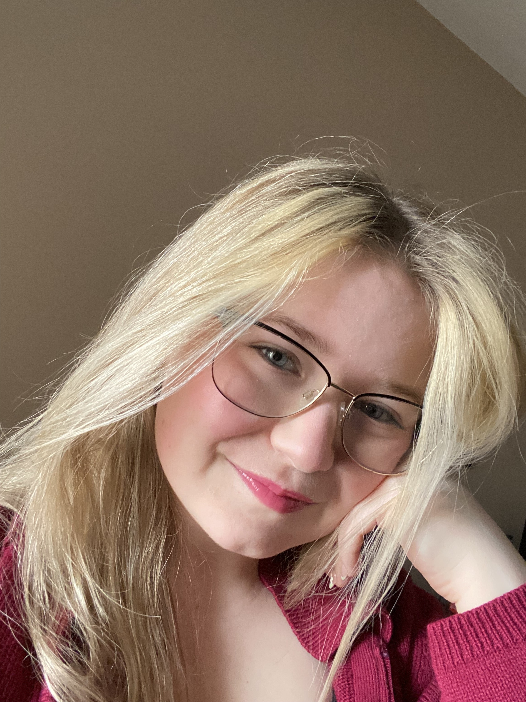

About Me
Hi! I’m Chloe Ann Erhardt, a recent graduate of the Interactive Media Design program. My journey through this program uncovered my passion for creative fields like photography, graphic design, and UX design — all of which have reshaped how I view the world and how I express ideas visually and experientially.
A Bit About What Makes Me, Me
- I’m a huge fan of horror, especially anything related to zombie apocalypse stories — they spark my imagination and creativity.
- Anime has always been a big part of my life, and I once dreamed of creating my own manga or anime series.
- I’m naturally organized and slightly obsessed with time management — I love planning projects and meeting deadlines.
- Some of my happiest moments happen when I’m exploring new places with friends, always finding inspiration in the world around me.
What Drives Me
I believe creativity is about telling stories that connect, surprise, and inspire — whether through visuals, user experiences, or design. I’m excited to continue developing my skills and bringing fresh ideas to life.
